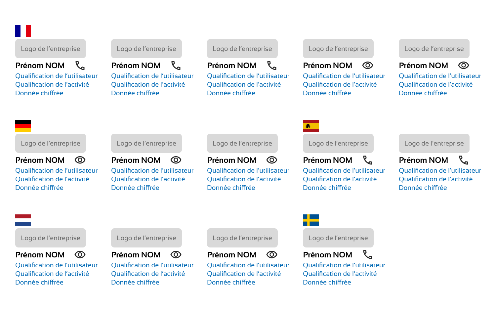
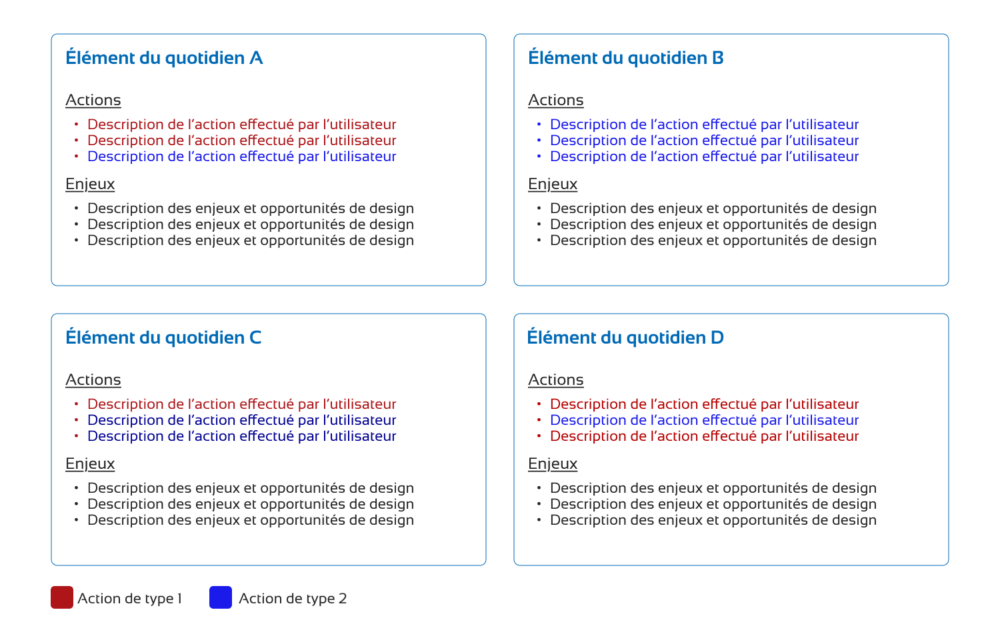
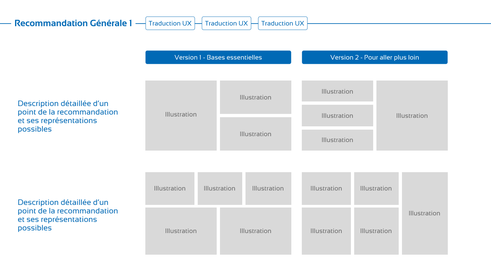
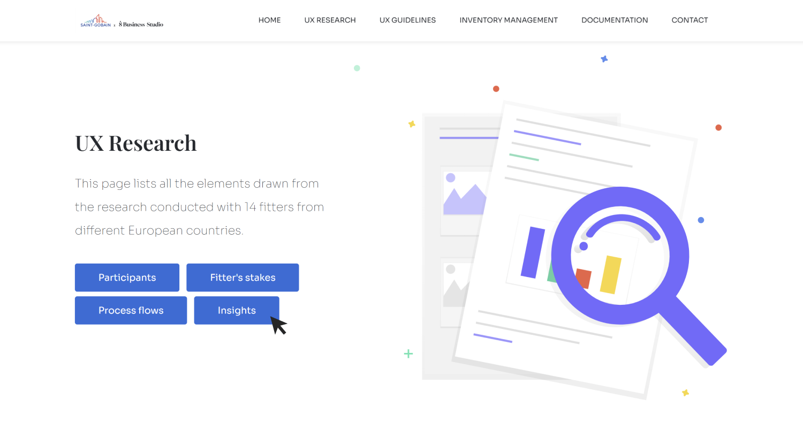

Saint-Gobain
Recherche utilisateur IndustrieLa conclusion d’un travail de recherche utilisateur est toujours un moment critique dans un projet. Une grande quantité d’informations a été recueillie, accompagnée de nombreux enseignements riches. Il est essentiel de les transmettre de manière claire et efficace et de les traduire en recommandations actionnables pour mobiliser les parties prenantes. Dans cette étude de cas, je présente mon expérience lors d'une mission pour Saint-Gobain, qui souhaitait identifier les axes d'évolution de son site de vente aux professionnels dans un contexte de concurrence accrue.
Comment restituer une recherche utilisateur afin de transmettre les recommandations d’une expérience qualitative ?
1. Contextualiser la recherche
Afin de situer l’ensemble du travail réalisé, il est nécessaire de contextualiser la recherche et de rappeler la méthodologie employée. Une recherche mal contextualisée risque de perdre son impact, car les parties prenantes pourraient avoir du mal à saisir la portée des conclusions.
Des entretiens utilisateurs et des observations in situ ont été réalisés auprès de 14 clients dans cinq pays différents (Espagne, Espagne, Suède, Pays-Bas et Espagne). Certains échanges ont eu lieu sur place, tandis que d’autres ont été organisés en visioconférence. Chaque méthode comportant ses biais, j’ai produit une visualisation permettant d’introduire les paramètres de la recherche aux parties prenantes, leur offrant ainsi une vue d’ensemble claire et structurée.
2. Formaliser le quotidien utilisateur
Au-delà du simple parcours d'achat, il était essentiel d'exposer le quotidien des utilisateurs, notamment leur environnement professionnel, leurs contraintes et leurs besoins réels.
Pour cela, j'ai conçu une matrice des enjeux métiers des clients finaux, un schéma de leurs parcours en fonction de leur type d'achat, ainsi qu'une vue détaillée de leur cockpit de gestion. Ces outils visuels facilitent l'empathie et la compréhension de la réalité des utilisateurs par l'équipe projet.
3. Traduire les enseignements en recommandations actionnables
Une fois les enseignements clés extraits, il est important de les transformer en recommandations actionnables. Pour ce faire, j'ai décomposé chaque enseignement en recommandations concrètes, illustrées par des benchmarks externes.
Cette démarche permet de rendre les améliorations plus tangibles et atteignables. Plutôt que de simplement pointer les problèmes, des solutions inspirées de bonnes pratiques observées ailleurs sont proposées.
4. Réinventer le format ?
Plutôt que de produire un rapport classique, souvent long et peu engageant, j'ai choisi un format interactif. Grâce à une application web, j'ai conçu un site dédié à la restitution de la recherche.
Ce site regroupait les visuels clés de la recherche ainsi que des vidéos résumant les présentations officielles réalisées devant les parties prenantes. Ce format dynamique a été bien accueilli, car il évite la perte d'informations et maximise l'appropriation des résultats.
Conclusion
Restituer une recherche utilisateur de manière efficace implique de structurer les informations pour les rendre accessibles et exploitables. En contextualisant la recherche, en illustrant le quotidien des utilisateurs, en traduisant les enseignements en recommandations actionnables et en innovant sur le format de restitution, il est possible de maximiser l'impact des résultats.
Un livrable bien conçu ne se limite pas à présenter des constats : il doit être conçu comme un outil d’aide à la décision qui engage les parties prenantes et facilite la mise en œuvre des recommandations.